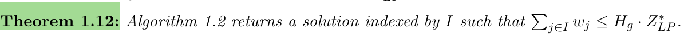

An introduction to approximation algorithms
本节取自《The Design of Approximation-Algorithms》第一章，介绍了近似算法的一些基本定义并以\(set \quad cover\) 问题为例，使用了一些常用的技巧来设计近似算法。
专业名词
discrete optimization：离散优化
- 应用于安排课程、计划运输路线等一系列\(NP-hard\)问题（没有多项式时间的解）
- 解决\(NP-hard\)问题的方法：
- 限制算法是多项式时间的
- 放弃寻找最优解，而是去寻找足够好的解。
- 对于现实中复杂的问题，研究其理想化的版本。如模拟退火算法（simulated annealing）、遗传算法（genetic algorithms）、禁忌搜索（tabu search）
heuristics and metaheuristics：启发式和元启发式
启发式算法
一个基于直观或经验构造的算法，在可接受的花费（指计算时间和空间）下给出待解决组合优化问题每一个实例的一个可行解，该可行解与最优解的偏离程度一般不能被预计。
元启发式算法
一类通用型的启发式算法，这类算法的优化机理不过分依赖于算法的组织结构信息，可以广泛的应用到函数的组合优化和函数计算中
近似算法和启发式算法的区别
近似算法通常能得到一个有质量保证的解。启发式算法通常可在传统解决问题的经验中找到寻求一种面向问题的策略，之后用这种策略来在可行时间内寻找一个相对比较好的解，但对解的质量没有保证。
P问题、NP问题、NPC问题
多项式时间（polynomial time）：可用多项式表示的时间复杂度，如\(O(1)\)、\(O(\log N)\)、\(O(N^2)\)
约化(Reducibility)：问题\(A\)可以约化为问题\(B\)，即用问题\(B\)的方法解决问题\(A\)，此约化是多项式的。例：用求解一元一次方程的方法约化为求解一元二次方程的方法。
\(P\)问题：一类可在多项式时间内解决的问题的集合。
\(NP\)问题：一类问题，此类问题可在多项式时间内验证。
\(NP-Complete\)问题：一类问题\(X\)，任意\(NP\)问题\(Y\)都可以在多项式式时间内约化为问题\(X\)。
证明一个问题是\(NPC\)问题：
- 此问题为\(NP\)问题
- 一个已知的\(NPC\)问题可以约化为此问题
Pick all the correct statements.If a problem \(H\) is \(NP-Complete\), then...
☑For any problem \(L\) in \(NP\), there is a polynomial-time reduction from \(L\) to \(H\).
☑For any problem \(L\) in \(P\), there is a polynomial-time reduction from \(L\) to \(H\).
☐\(H\) belongs to the class \(P\).
☑\(H\) belongs to the class \(NP\).
☑If there exists a polynomial-time algorithm for the Hamiltonian path problem then there exists a polynomial-time algorithm for \(H\).
☑An output to problem H is either "yes" or "no".
☑If there exists a polynomial-time algorithm for H then there exists a polynomial-time algorithm for the Hamiltonian path problem.
\(NP-Hard\)问题：一类问题所组成的集合，此类问题的范围比\(NPC\)问题广，不一定为决策问题，不包含于\(NP\)问题。任何\(NPC\)问题可在多项式时间内约化为\(NP-Hard\)问题。
Pick all the correct statements.If a problem \(H\) is \(NP-Hard\), then...
☑For any problem \(L\) in \(P\), there is a polynomial-time reduction from \(L\) to \(H\).
☐\(H\) belongs to the class \(P\).
☐\(H\) belongs to the class \(NP\).
☑If there exists a polynomial-time algorithm for \(H\) then there exists a polynomial-time algorithm for the Hamiltonian path problem.
☐If there exists a polynomial-time algorithm for the Hamiltonian path problem then there exists a polynomial-time algorithm for \(H\).
☐An output to problem \(H\) is "yes" or "no".
☑For any problem \(L\) in \(NP\), there is a polynomial-time reduction from \(L\) to \(H\).
[
近似算法
定义
- 性能保证（performance guarantee）/近似比（approximation
ratio）/近似因子（approximation factor）：\(\alpha\)
- 对于最大化问题：\(\alpha<1\)
- 对于最小化问题：\(\alpha>1\)
- Ex:一个最大化问题的\(1/2-approximation
\quad algorithm\)
- 此算法的输出值\(S\geq (1/2)S^*\)
近似算法的意义
- 近似算法可用于不需要得到最优解的\(NP-hard\)问题
- 近似算法关注于理想化的模型，通过定理的证明可以对问题结构更深刻的思考，可以启发人们设计出解决实际问题的启发式算法
- 启发式和元启发式算法是通过经验设计出来的，近似算法有严谨的数学证明
- 可以通过近似算法来度量不同优化问题的难易程度
PTAS
MAX SNP-hard problem
the set cover problem
Definition
Input:
集合\(E=\left\{e_1, \ldots, e_n\right\}\)
\(S_1, S_2, \ldots, S_m\)，\(each \quad S_j \subseteq E\)
权重\(w_j \geq 0\)，\(for \quad each \quad S_j\)
Goal:找到一个权重最小的覆盖子集，即寻找一个满足\(\bigcup_{j \in I} S_j=E\)的子集\(I \subseteq\{1, \ldots, m\}\)使得\(\sum_{j \in I} w_j\)最小。
special case：当\(w_j=1\)时，称为unweighted set cover problem.
问题的推广：vertex cover problem
问题的整数规划形式： \[ \begin{aligned} & \operatorname{minimize} \sum_{j=1}^m w_j x_j \\ & \text { subject to } \sum_{j: e_i \in S_j} x_j \geq 1, \quad \\ & x_j \in\{0,1\}, \quad j=1, \ldots, n, \end{aligned} \]
- 整数规划最优解对应的目标值：\(Z_{I P}^*\)，\(Z_{I P}^*=\mathrm{OPT}\)
- 整数规划无法在多项式时间内求解
- \(proof\):因为set cover问题是\(NP-hard\)的，假如可以在多项式时间内解决整数规划问题，set cover问题就可以在多项式时间内解决了，矛盾。
- 但是，线性规划问题是多项式时间内可解的
问题的线性规划形式： \[ \begin{aligned} & \operatorname{minimize} \sum_{j=1}^m w_j x_j \\ & \text { subject to } \sum_{j: e_i \in S_j} x_j \geq 1, \quad i=1, \ldots, n, \\ & x_j \geq 0, \quad j=1, \ldots, m . \end{aligned} \]
- 增加约束\(x_j \leq 1\)是冗余的，因为在问题的任何最优解中，我们可以在不影响解的可行性和不增加其成本的情况下将任意\(x_j > 1\)减少到\(x_j = 1\)
- 因为此问题的线性规划是整数规划的松弛，所以该问题整性规划的解均满足线性规划，且该解在两个模型中具有相等的目标值
- 线性规划最优解对应的目标值：\(Z_{L P}^*\)，\(Z_{I D}^* \leq Z_{I D}^*=\mathrm{OPT}\)
vertex cover problem
Definition
Input:
无向图\(G=(V,E)\)
任意点\(i \in V\)的权值\(w_i \geq 0\)
Goal：寻找一个子集\(C \subseteq V\)，满足对任意\((i, j) \in E\)，\(i \in C\) 或 \(j \in C\)。
special case：当每个点\(w_i=1\)时，称为unweighted set cover problem.
algorithm for set cover problem（1）：LP-rounding
算法：
- 由set cover问题的线性规划模型得到最优解\(x^*\)
- 对于集合\(E\)中的任意\(e_i(i=1,...,n)\)，\(f_i=\left|\left\{j: e_i \in S_j\right\}\right|\)，令\(f=\max _{i=1, \ldots, n} f_i\)。
- 对\(x^*\)进行四舍五入，若\(x_j^* \geq 1 / f\)令\(\hat{x}_j=1\)，否则令\(\hat{x}_j=0\)。
-
- \(proof.\)已知\(x^*\)是线性规划模型的可行解，对于每个\(e_i\)均满足\(\sum_{j: e_i \in S_j} x_j^* \geq 1\)，即\(E\)中的每个元素均被覆盖。又由于\(f_i\)、\(f\)的定义，\(e_i\)最终被覆盖的次数最多为\(f_i\leq f\)，因此每次覆盖的可能性至少为\(1/f\)。所以对于覆盖\(e_i\)的\(S_j\)满足\(x_j^* \geq 1 / f\)。综上线性规划模型的最优解\(x^*\)对应的集合是\(E\)的覆盖集。
-
\(proof.\)
由\(Lemma 1.5\)的证明可知，对于每个\(j\in I\)满足\(x_j^* \geq 1 / f\)，所以有\(f w_j x_j^*\geq0(j=1,...,m)\)。
\[ \begin{aligned} \sum_{j \in I} w_j & \leq \sum_{j=1}^m w_j \cdot\left(f \cdot x_j^*\right) \\ & =f \sum_{j=1}^m w_j x_j^* \\ & =f \cdot Z_{L P}^* \\ & \leq f \cdot \mathrm{OPT} \end{aligned} \]
special case：在vertex cover问题中，因为一个点会被两条边所覆盖，满足对\(\forall i \in V,f_i=2\)。该问题的rounding算法的近似比为2.
algorithm for set cover problem（2）：dual--rounding
set cover问题中线性规划松弛的对偶线性规划：
假设每个元素\(e_i\)被一个集合覆盖的代价\(y_i\geq0\)，设定被高权重集合覆盖的元素价值高，被低权重集合覆盖的元素价值低
被同一集合覆盖的元素之和不能高于集合的权重，即\(\sum_{i: e_i \in S_j} y_i \leq w_j\)
可以通过下面的线性规划找到元素可以被收取的最高总价
\[ \begin{array}{ll} \operatorname{maximize} & \sum_{i=1}^n y_i \\ \text { subject to } & \sum_{i: e_i \in S_j} y_i \leq w_j, \quad j=1, \ldots, m, \\ y_i \geq 0, & i=1, \ldots, n . \end{array} \]
模型（4）为set cover问题中线性规划松弛的对偶线性规划，（3）为（4）的原始线性规划
set cover问题对偶线性规划的弱对偶性质（weak duality property）：
- \(\sum_{i=1}^n y_i \leq \sum_{i=1}^n y_i
\sum_{j: e_i \in S_j} x_j\)
- 因为\(\sum_{j: e_i \in S_j} x_j \geq 1\)
- 又因为不等式右边可以改写为\(\sum_{i=1}^n
y_i \sum_{j: e_i \in S_j} x_j=\sum_{j=1}^m x_j \sum_{i: e_i \in S_j}
y_i\)
- 左边为所有\(e_i\)的价值乘以它所在\(S_j\)的个数，右边先求属于同一\(S_j\)的\(e_i\)的价值和，在对所有的\(S_j\)求和。
- 因为\(y\)是对偶线性规划的可行解，所以\(\sum_{j=1}^m x_j \sum_{i: e_i \in S_j} y_i \leq
\sum_{j=1}^m x_j w_j\)
- 因为\(\sum_{i: e_i \in S_j} y_i \leq w_j\)
- 综上，\(\sum_{i=1}^n y_i \leq \sum_{j=1}^m w_j x_j\)
- 也就是说，任意对偶问题线性规划可行解的目标值小于等于任意原线性规划问题可行解的目标值，即\(\sum_{i=1}^n y_i \leq Z_{L P}^*\)。这被称为线性规划的弱对偶性质。
- 又因为\(Z_{L P}^* \leq \mathrm{OPT}\)，可得\(\sum_{i=1}^n y_i \leq \mathrm{OPT}\)。
- \(\sum_{i=1}^n y_i \leq \sum_{i=1}^n y_i
\sum_{j: e_i \in S_j} x_j\)
set cover问题对偶线性规划的强对偶性质（strong duality property）：
- 强对偶性质：只要原始线性规划和对偶线性规划都存在可行解，那么它们的最优值相等。
- \(x^*\)是原线性规划问题的最优解，\(y^*\)是对偶线性规划的最优解，则
- \(\sum_{j=1}^m w_j x_j^*=\sum_{i=1}^n y_i^*\)
算法：
选择所有使得对偶线性规划模型约束是紧的\(S_j\)，即所有的\(S_j\)满足\(\sum_{i: e_i \in S_j} y_i^*=w_j\)。这是一个\(f-\)近似的近似算法。
-
\(proof.\)
\(idea\):先假设有元素\(e_k\)没有被\(y^*\)对应的集合覆盖，在\(y^*\)的基础上构造新的覆盖集\(y'\)，\(y'\)是满足对偶约束、目标值更优的覆盖集，矛盾。
假设存在没有被覆盖的元素\(e_k\)，则对任意覆盖\(e_k\)的集合\(S_j\)，有\(\sum_{i: e_i \in S_j} y_i^*<w_j\)。令\(\epsilon=\min _{j: e_i \in S_j}\left(w_j-\sum_{i: e_i \in S_j} y_i^*\right)\)，由前面的不等式可知，\(\epsilon>0\)
考虑一个新的对偶解\(y'\)，其中\(y_k'=y_k^*+\epsilon\)，\(y'\)的剩余部分同\(y^*\)。\(y'\)是对偶可行解，因为对任意包含\(e_k\)的\(S_j\)，有\(\sum_{i: e_i \in S_j} y_i^{\prime}=\sum_{i: e_i \in S_j} y_i^*+\epsilon \leq w_j\)。
由\(\epsilon\)的定义，对于任意不包含\(e_k\)的\(S_j\)，\(\sum_{i: e_i \in S_j} y_i^{\prime}=\sum_{i: e_i \in S_j} y_i^* \leq w_j\)。
又因为\(\sum_{i=1}^n y_i^{\prime}>\sum_{i=1}^n y_i^*\)，这与\(y^*\)的最优性相悖。
综上，所有元素都被覆盖且\(I'\)是集合覆盖。
-
\(proof.\)
\(idea.\)"charging" argument:当我们选择一个集合\(S_j\)作为覆盖集合时，通过向它的每个元素"charging"\(y_i^*\)来进行付费；对于每个包含\(e_i\)的集合，每个元素最多被付费一次，因此总成本最多为\(f \sum_{i=1}^m y_i^*\)，或者是对偶目标函数的\(f\)倍。
由于该算法得到的覆盖\(j\in I'\)均满足\(w_j=\sum_{i: e_i \in S_j} y_i^*\)。
则覆盖集的总价值
\[ \begin{aligned} \sum_{j \in I^{\prime}} w_j & =\sum_{j \in I^{\prime}} \sum_{i: e_i \in S_j} y_i^* \\ & =\sum_{i=1}^n\left|\left\{j \in I^{\prime}: e_i \in S_j\right\}\right| \cdot y_i^* \\ & \leq \sum_{i=1}^n f_i y_i^* \\ & \leq f \sum_{i=1}^n y_i^* \\ & \leq f \cdot \mathrm{OPT} . \end{aligned} \]
比较\(LP-rounding\)与\(dual-rounding\)算法：
- 设由\(LP-rounding\)算法得到的集合下标为\(I\)，\(dual-rounding\)算法得到的集合下标为\(I’\)，有\(I \subseteq I^{\prime}\)。
- 互补松弛性（complementary slackness）：
- 由前面的弱对偶性：\(\sum_{i=1}^n y_i \leq \sum_{i=1}^n y_i \sum_{j: e_i \in S_j} x_j=\sum_{j=1}^m x_j \sum_{i: e_i \in S_j} y_i \leq \sum_{j=1}^m x_j w_j\)
- 又因为强对偶性表明，对于最优解\(x^*\)与\(y^*\)：\(\sum_{i=1}^n y_i^*=\sum_{j=1}^m w_j x_j^*\)。只有\(y_i^*>0\)，\(\sum_{j: e_i \in S_j} x_j^*=1\)；\(x_j^*>0\)，\(\sum_{i: e_i \in S_j} y_i^*=w_j\)时满足这种情况。
- 1.互补松弛条件：每当线性规划变量(原始或对偶)非零时，对应的对偶或原始约束是紧的。
- 2.如果\(x^*\)和\(y^*\)是最优解，互补松弛条件必须成立。反之亦然,如果\(x^*\)和\(y^*\)分别是可行的原始解和对偶解，那么如果互补松弛条件成立，则两个目标函数的值相等，此解一定是最优的。
- 如果对于任意的原始最优解\(x^*\)，都有\(x_j^* > 0\)，那么对于任意的对偶最优解\(y^*\)，对应的关于\(S_j\)的对偶不等式一定是紧的。回想上一节的算法，当\(x_j^ *\geq1 / f\)时，令\(j\in I\)。因此\(j\in I\)意味着\(j\in I'\)，从而\(I'\subseteq I\)。
- 综上，\(I'= I\)。
algorithm for set cover problem（3）：primal-dual algorithm
前两节算法的一个缺点是需要求解一个线性规划。虽然线性程序是高效可解的，并且其算法在实际应用中是快速的，但是特殊目的的算法往往要快得多。
最优对偶解的性质
原始-对偶优化算法：线性规划问题、网络流问题、最短路径问题等都有原-对偶优化算法。原始-对偶算法从一个对偶可行解开始，利用对偶信息来推断一个原始的、可能不可行的解。如果原始解确实不可行，则修改对偶解以增加对偶目标函数的值。
算法：
\(idea.\)构造对偶解而不是求解对偶\(LP\)。
-
step1：给出一个初始对偶可行解\(y=0\)，此时\(I\)为空集。
step2：进行最多\(n\)次循环，在每次循环中假如存在不被覆盖的元素\(e_i\)，增加对应的变量\(y_i\)直到引入覆盖\(e_i\)的\(S_l\)，满足\(\sum_{j: e_j \in S_{\ell}} y_j=w_{\ell}\)。
step3：在每次循环结束后\(I \leftarrow I \cup\{\ell\}\)，进入下一次循环。
-
- 同\(dual-rounding\)算法。
algorithm for set cover problem（4）：A greedy algorithm
算法：
\(idea:\)每一轮选择一个新的集合 ，直到所有元素被覆盖。
-
- step1：初始化\(I\)为空集，对任意\(j\)，\(\hat{S}_j \leftarrow S_j\)
- step2：进行若干次循环，直到\(I\)对应的集合是\(E\)的覆盖
- step3：在每次循环中，选取权重与其包含的当前未覆盖元素个数之比最小的集合，将该集合的下标并入\(I\)。对所有\(\hat{S}_j\)去掉已经被覆盖的元素。进入下一次循环。
时间复杂度：\(O(m^2)\)
notation and a useful mathematical fact:
- \(k\)次调和数\(H_k\)（kth harmonic number）：
- \(H_k=1+\frac{1}{2}+\frac{1}{3}+\cdots+\frac{1}{k}\)
- \(H_k \approx \ln k\)
- \(k\)次调和数\(H_k\)（kth harmonic number）：

\(proof.\)
令\(n_k\)表示第\(k\)次迭代开始时剩余未覆盖的元素个数。假如算法总共进行了\(\ell\)次迭代，则\(n_1=n\)，\(n_{l+1}=0\)。
选择任意次迭代\(k\)，令\(I_k\)表示迭代\(1\)到\(k - 1\)中所选集合的下标。
对任意\(j=1,...,m\)，令\(\hat{S}_j\)表示迭代开始时\(S_j\)中未覆盖元素的集合，\(\hat{S}_j=S_j-\bigcup_{p \in I_k} S_p\)
对于在\(k\)次迭代中选择的集合\(j\)，满足\(w_j \leq \frac{n_k-n_{k+1}}{n_k} \mathrm{OPT}\)
- 设\(O\)包含最优解中集合的指标，则在第\(k\)次迭代中满足\(\min _{j: \hat{S}_j \neq \emptyset}
\frac{w_j}{\left|\hat{S}_j\right|} \leq \frac{\sum_{j \in O}
w_j}{\sum_{j \in O}\left|\hat{S}_j\right|}=\frac{\mathrm{OPT}}{\sum_{j
\in O}\left|\hat{S}_j\right|} \leq \frac{\mathrm{OPT}}{n_k}\)
- 第一个不等式是因为Fact 1.10
- 最后一个不等式是因为\(U_{j \in O} \hat{S}_j\)必须包含着剩余\(n_k\)个没被覆盖的元素，所以\(\sum_{j \in O}\left|\hat{S}_j\right|\geq n_k\)
- 又因为\(n_{k+1}=n_k-\left|\hat{S}_j\right|\)，所以\(w_j \leq \frac{\left|\hat{S}_j\right| \mathrm{OPT}}{n_k}=\frac{n_k-n_{k+1}}{n_k} \mathrm{OPT}\)
- 设\(O\)包含最优解中集合的指标，则在第\(k\)次迭代中满足\(\min _{j: \hat{S}_j \neq \emptyset}
\frac{w_j}{\left|\hat{S}_j\right|} \leq \frac{\sum_{j \in O}
w_j}{\sum_{j \in O}\left|\hat{S}_j\right|}=\frac{\mathrm{OPT}}{\sum_{j
\in O}\left|\hat{S}_j\right|} \leq \frac{\mathrm{OPT}}{n_k}\)
\[ \begin{aligned} \sum_{j \in I} w_j & \leq \sum_{k=1}^{\ell} \frac{n_k-n_{k+1}}{n_k} \mathrm{OPT} \\ & \leq \mathrm{OPT} \cdot \sum_{k=1}^{\ell}\left(\frac{1}{n_k}+\frac{1}{n_k-1}+\cdots+\frac{1}{n_{k+1}+1}\right) \\ & =\mathrm{OPT} \cdot \sum_{i=1}^n \frac{1}{i} \\ & =H_n \cdot \mathrm{OPT} \end{aligned} \]
第二个不等式是因为\(\frac{1}{n_k} \leq \frac{1}{n_k-i}\)
\[ \begin{aligned}\frac{n_k-n_{k+1}}{n_k}&=\frac{1}{n_k}*(n_k-n_{k+1})\\ &=\frac{1}{n_k}+\frac{1}{n_k}+\cdots+\frac{1}{n_{k}}\\ &\leq\frac{1}{n_k}+\frac{1}{n_k-1}+\cdots+\frac{1}{n_{k+1}+1}\end{aligned} \]

对比\(greedy-algorithm\)和$LP-rounding $
\(proof.\)
\(idea.\)构造对偶拟合
对偶拟合（dual fitting）：构造一个不可行对偶解，这个解的目标值与原始解的值相等，对对偶解进行单值放缩使之具有可行性。
step1：构造不可行对偶解。
- 假设在第\(k\)次迭代中加入集合\(S_j\)，对任意在此次迭代之前没被覆盖的元素\(e_i \in \hat{S}_j\)，令\(y_i=w_j /\left|\hat{S}_j\right|\)。\(w_j=\sum_{i: e_i \in \hat{S}_j} y_i\)，因为在第\(k\)次迭代中选择的子集\(S_j\)的权重等于在第\(k\)次迭代中覆盖的未覆盖元素的对偶\(y_i\)之和，因此\(\sum_{j \in I} w_j=\sum_{i=1}^n y_i\)。
step2：对不可行对偶解进行放缩，得到可行对偶解（证明\(y^{\prime}=\frac{1}{H_g} y\)可行）
证明\(y^{\prime}=\frac{1}{H_g} y\)可行，即证明对任意的\(S_j\)有\(\sum_{i: e_i \in S_j} y_i^{\prime} \leq w_j\)。
令\(a_k\)为第\(k\)次迭代开始前仍未被覆盖的元素个数，其中\(a_1=\left|S_j\right|\)，\(a_{\ell+1}=0\)。令\(A_k\)为经过第\(k\)次迭代后被新覆盖的元素个数，\(\left|A_k\right|=a_k-a_{k+1}\)。假如\(S_p\)是第\(k\)次迭代被加入的集合，则对任意\(e_i \in A_k\)，有\(y_i^{\prime}=\frac{w_p}{H_g\left|\hat{S}_p\right|} \leq \frac{w_j}{H_g a_k}\)
- \(\hat{S}_p\)为第\(k\)次迭代开始前\(S_p\)包含的没被覆盖的元素，\(S_p\)之所以被选中是因为它的权重与它所包含的未覆盖元素个数的比值最小。
\[ \begin{aligned} \sum_{i: e_i \in S_j} y_i^{\prime} & =\sum_{k=1}^{\ell} \sum_{i: e_i \in A_k} y_i^{\prime} \\ & \leq \sum_{k=1}^{\ell}\left(a_k-a_{k+1}\right) \frac{w_j}{H_g a_k} \\ & \leq \frac{w_j}{H_g} \sum_{k=1}^{\ell} \frac{a_k-a_{k+1}}{a_k} \\ & \leq \frac{w_j}{H_g} \sum_{k=1}^{\ell}\left(\frac{1}{a_k}+\frac{1}{a_k-1}+\cdots+\frac{1}{a_{k+1}+1}\right) \\ & \leq \frac{w_j}{H_g} \sum_{i=1}^{\left|S_j\right|} \frac{1}{i} \\ & =\frac{w_j}{H_g} H_{\left|S_j\right|} \\ & \leq w_j \end{aligned} \]
- 其中，\(g=\max _j\left|S_j\right|\)，显然\(H_{\left|S_j\right|} \leq H_g\)
algorithm for set cover problem（5）：A randomized rounding algorithm
在本节中，我们考虑了一种设计集合覆盖问题近似算法的最终技术。尽管该算法比上一节的贪婪算法更慢，也没有更好的保证，但我们将其包括在这里，因为它引入了在近似算法中使用随机化的概念，我们将在第五章中深入讨论这个想法。
算法：
对set cover问题求解一个线性规划松弛，然后将分式解随机舍入为整数解。
随机舍入：
设\(x^*\)为\(LP\)松弛的最优解，希望将\(x^*\)取整为1或者0，从而在不增加过多成本的情况下，得到set cover问题的整数规划形式的解\(\hat{x}\)。
\(x_j^*\)为将\(\hat{x}_j\)设为1的概率，因此每个子集\(S_j\)以概率\(x_j^*\)包含在我们的解中，其中\(m\)个事件( \(S_j\)包含在我们的解中)是独立的随机事件。
设\(X_j\)是一个随机变量，如果子集\(S_j\)包含在解中，则\(X_j\)为1，否则为0。\(E\left[\sum_{j=1}^m w_j X_j\right]=\sum_{j=1}^m w_j \operatorname{Pr}\left[X_j=1\right]=\sum_{j=1}^m w_j x_j^*=Z_{L P}^*\)
由随机舍入得到的集合既有可能是覆盖，也有可能不是。计算给定元素\(e_i\)不被这个过程覆盖的概率，即包含\(e_i\)的子集中没有一个包含在解中的概率，为\(\prod_{j: e_i \in S_j}\left(1-x_j^*\right)\)。
\[ \begin{aligned} \operatorname{Pr}\left[e_i \text { not covered }\right] & =\prod_{j: e_i \in S_j}\left(1-x_j^*\right) \\ & \leq \prod_{j: e_i \in S_j} e^{-x_j^*} \\ & =e^{-\sum_{j: e_i \in S_j} x_j^*} \\ & \leq e^{-1} \end{aligned} \]
- 第一的不等式是因为\(1-x \leq e^{-x}\)
- 最后一个不等式是因为在\(LP\)模型中\(\sum_{j: e_i \in S_j} x_j^* \geq 1\)。
因此在最坏的情况下，这种随机取整过程很可能不会产生集合覆盖。
什么叫高概率工作的算法？
- 假设对于任意常数\(c\)，我们可以设计一个多项式时间算法，其失败的概率至多是一个逆多项式\(n^{-c}\)，然后我们说我们有一个高概率工作的算法。
如何设计出一个更有可能产生集合覆盖的算法？
- 如果我们能够设计一个随机过程使得对于某个常数\(c\geq2\)，\(\operatorname{Pr}\left[e_i\right.\) not covered \(] \leq \frac{1}{n^c}\)
- 那么\(\operatorname{Pr}[\) there exists an uncovered element \(] \leq \sum_{i=1}^n \operatorname{Pr}\left[e_i\right.\) not covered \(] \leq \frac{1}{n^{c-1}}\)
- 结合上一部分可以称这个算法会有一个高概率的集合覆盖。
如何达到\(n^{-c}\)的界？
对于任意的集合\(S_j\)，假设一个硬币以\(x^*_j\)的概率正面朝上，将硬币抛\(clnn\)次，如果硬币在任意一次正面朝上，则将\(S_j\)包含在解中。可以发现\(S_j\)不被包含在解中的概率为\(\left(1-x_j^*\right)^{c \ln n}\)。
此时
\[ \begin{aligned} \operatorname{Pr}\left[e_i \text { not covered }\right] & =\prod_{j: e_i \in S_j}\left(1-x_j^*\right)^{c \ln n} \\ & \leq \prod_{j: e_i \in S_j} e^{-x_j^*(c \ln n)} \\ & =e^{-(c \ln n) \sum_{j: e_i \in S_j} x_j^*} \\ & \leq \frac{1}{n^c} \end{aligned} \]
-
证明该算法在产生集合覆盖的情况下具有良好的期望值
\(proof.\)
step1：计算期望
\(p_j\left(x_j^*\right)\)是\(x_j^*\)的函数，是将集合\(S_j\)包含在解中的概率。\(p_j\left(x_j^*\right)=1-\left(1-x_j^*\right)^{c \ln n}\)。若\(x_j^* \in[0,1]\)且\(c \ln n \geq 1\)，则得到导数\(p_j^{\prime}\left(x_j^*\right)=(c \ln n)\left(1-x_j^*\right)^{(c \ln n)-1} \leq(c \ln n)\)。
因为\(p_j(0)=0\)，且函数\(p_j\)的斜率在区间\([0,1]\)上方以\(c \ln n\)为界，所以在区间\([0,1]\)上\(p_j\left(x_j^*\right) \leq(c \ln n) x_j^*\)。设\(X_j\)是一个随机变量，如果子集\(S_j\)包含在解中，则\(X_j\)为1，否则为0。则，
\[ \begin{aligned} E\left[\sum_{j=1}^m w_j X_j\right] & =\sum_{j=1}^m w_j \operatorname{Pr}\left[X_j=1\right] \\ & \leq \sum_{j=1}^m w_j(c \ln n) x_j^* \\ & =(c \ln n) \sum_{j=1}^m w_j x_j^*=(c \ln n) Z_{L P}^* \end{aligned} \]
step2：在给定集合覆盖产生的情况下，约束解的期望值
设\(F\)是由随机过程得到的解是可行覆盖集的事件，\(\bar{F}\)是这个事件的补集.由前面的讨论知道\(\operatorname{Pr}[F] \geq 1-\frac{1}{n^{c-1}}\)。
\[ E\left[\sum_{j=1}^m w_j X_j\right]=E\left[\sum_{j=1}^m w_j X_j \mid F\right] \operatorname{Pr}[F]+E\left[\sum_{j=1}^m w_j X_j \mid \bar{F}\right] \operatorname{Pr}[\bar{F}] \]
因为\(w_j\geq0\)，且\(E\left[\sum_{j=1}^m w_j X_j \mid \bar{F}\right] \geq 0\)
所以当\(n\geq2\)且\(c\geq2\)时
\[ \begin{aligned} E\left[\sum_{j=1}^m w_j X_j \mid F\right] & =\frac{1}{\operatorname{Pr}[F]}\left(E\left[\sum_{j=1}^m w_j X_j\right]-E\left[\sum_{j=1}^m w_j X_j \mid \bar{F}\right] \operatorname{Pr}[\bar{F}]\right) \\ & \leq \frac{1}{\operatorname{Pr}[F]} \cdot E\left[\sum_{j=1}^m w_j X_j\right] \\ & \leq \frac{(c \ln n) Z_{L P}^*}{1-\frac{1}{n^{c-1}}} \\ & \leq 2 c(\ln n) Z_{L P}^* \end{aligned} \]